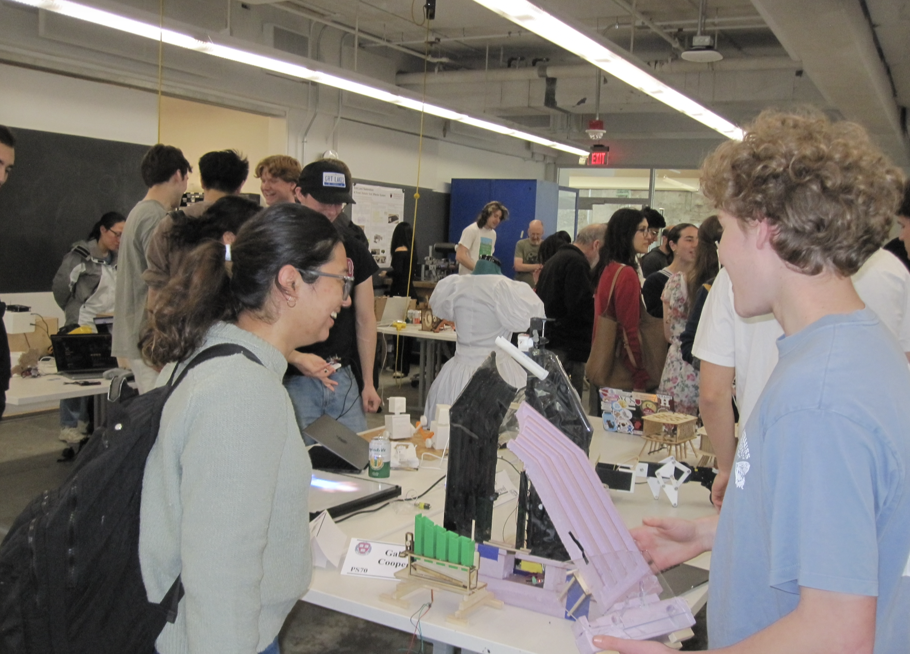
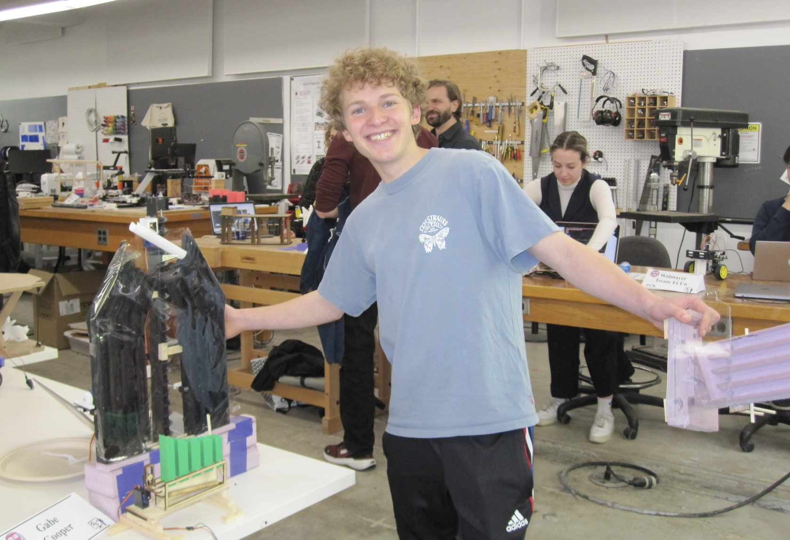
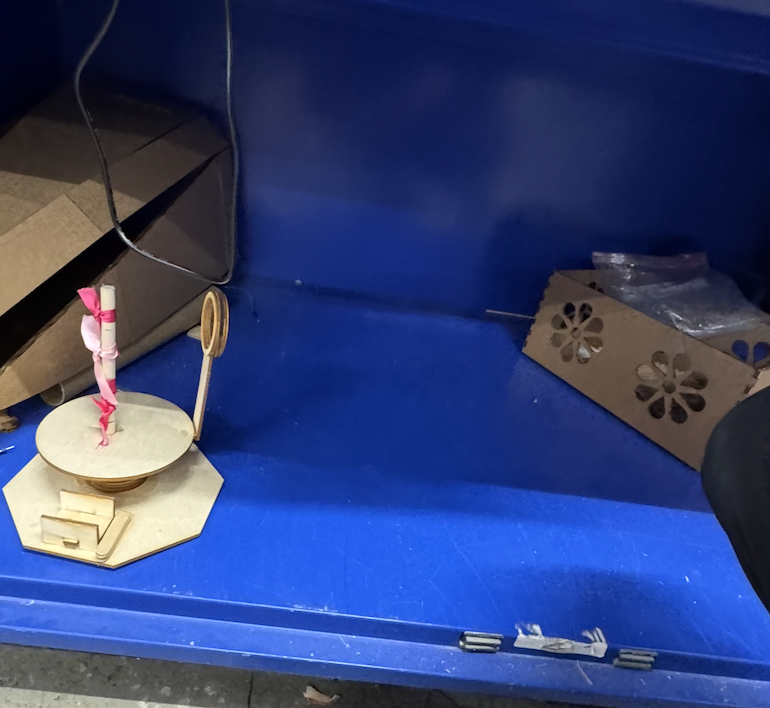
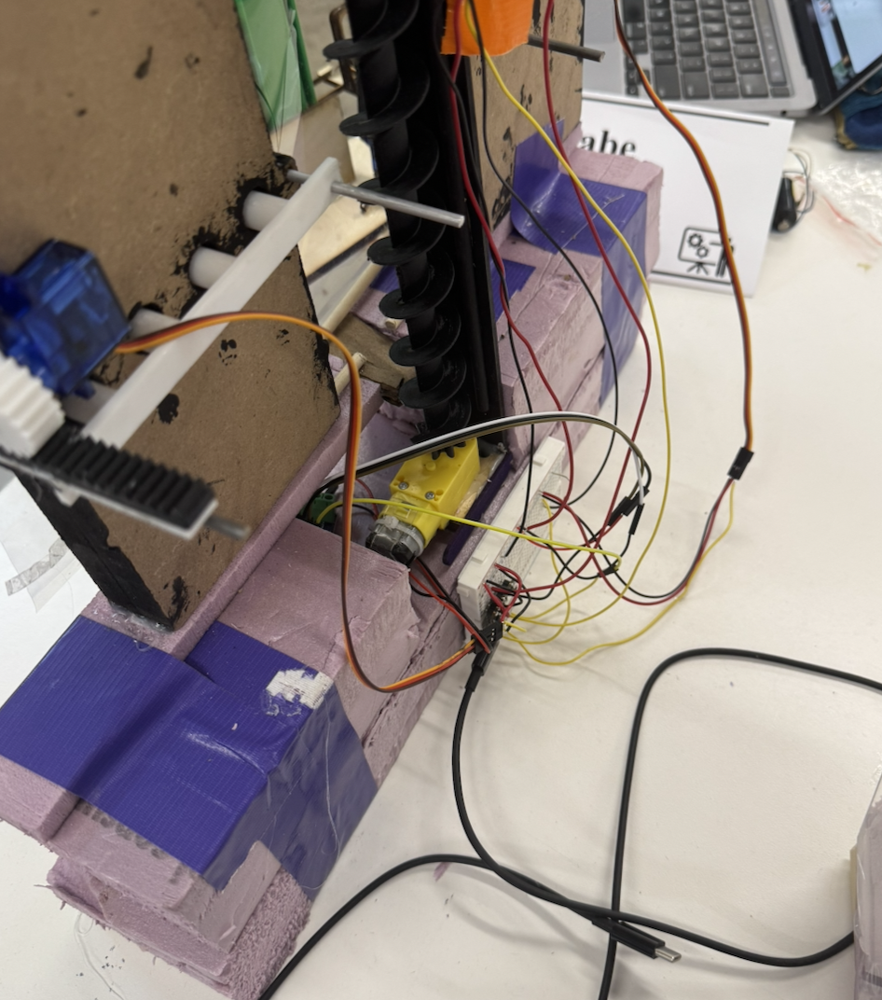
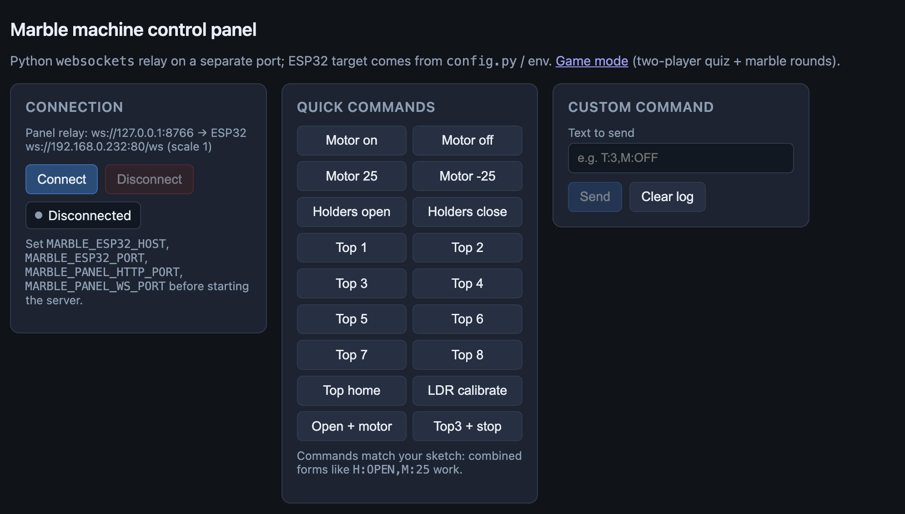
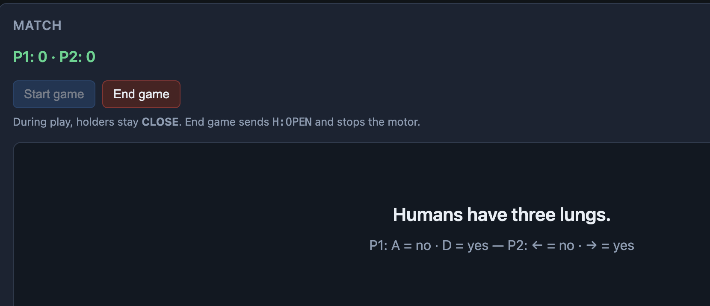

Final Project: Marble Tracker
Hey there! Welcome to the documentation for Marble Tracker, my final project.
Firstly, here's where things stand after MVP and Integrated Project weeks.
The core idea: A mechanical scoreboard that keeps track of 'things' with marbles. It will integrate a dropper mechanism at the top with a connect-4 slider to hold the marbles in place and an Archimedes screw elevator to lift the marbles to the top and a photoresistor at the top that will capture when the marble has fallen into one of the columns.

And now here's what's happened since:
I tweaked the Fusion Model SO SO SO much. My main considerations were minimizing the height of the screw elevator while also minimizing the horizontal distance between the two sides. This required a lot of geometric math (I even temporarily gaslighted myself into believing that a rod could sweep out an oval 🤦♂️) but ended up coming out really nicely.
I also moved the holes in each column upwards so that there was more space to store marbles under the connect-4 piece for when this eventually becomes a super popular product such that its users won't opt into the manual method of placing marbles by reaching around back.
Also a million other things kept breaking in the Fusion Model (nibs on the side, column pathways, rounded shape of the bottom) but my main takeaway from this step was that the SWEEP TOOL is easily the best feature in all of Fusion. :)
Check out the progression of my Fusion models for this project!
I CNC'd the Frame with help from Bobby
The thickness I wanted was strength so I used the pullsaw + glued pieces of MDF to achieve it. Yea… So he helped me with the right half, and then I did the left by myself! And considering that it's 90% the same, I've declared the CNCing step a massive success. It took about an hour though. For EACH side.
When the machine finally finished it looked awesome and the MDF was super strong so I loved the ShopBot. (foreshadowing).
Actually, I did not like the ShopBot.
The columns were warped (some too big, some too small — likely because of kerf and MDF unevenness) but this wasn't an immediate problem, so I kicked it down the road to the version of Gabe the day before his 21B exam.
There also was SO SO SO much sawdust attached to the bottom of the MDF which I deliberated on for a while. With hindsight, I really wish that I'd either redesigned the frame into a negative and casted it or redone the CNC on foam, however with the whole lost-cost of 2 hours of CNCing behind me, I decided to continue with the super saw-dusty frame and use a chisel to get the sawdust out.
Unfortunately, the chisel idea worked pretty poorly and I snapped the walls of one of the columns (replaced with lasercut wood), and wasn't able to get very much sawdust off. I considered washing it but wasn't sure how the wood would hold up. So instead, I thought, What would the Rolling Stones do?
Making the Base
With hindsight, I've come to see that the base really is the most important part of a mechanical contraption. It helps with housing the electronics, making sure everything is aligned (which is important with a marble apparatus), and generally making the overall project more organized. However, after my newfound fear of the CNC machine and confidence that nothing except wood or foam would support the MDF, I decided to use foam, duct-tape, the bandsaw, and a dream to make the base of my Tracker.
First, I made a lot of measurements with calipers (also an S tier tool). Then tested out different ball controlling pathway styles. Then cut, taped, and glued the elevator and the frame to the base.
3D Printing
In a switchup from the MVP, I switched from a Scottish Yoke to a Rack & Pinion system for holding the marbles in the machine. This was mainly due to the Rack & Pinion having way less friction and way more reliability. The Rack & Pinion mechanism with a press-fit onto the servo motor, fit perfectly on the first try. The holder, though, took 2 prints and required me using the drill press to make sure that all the guiding holes were an appropriate size. Also when designing for the Rack & Pinion, I included nibs on the side of the frame which proved indispensable in actually guiding the holder.
Another important 3D print was the press-fit dropper. I printed this twice: once out of clear TPU cause I thought it would look cool, but it broke. And then again out of PLA but with a thin roof. The roof also broke (see model). Yet, at this point, I figured it was still functional enough to attach to the project… and this ended up being super lucky because of the implications of using a smaller marble than expected.
The pre-dropper house. At the top of the elevator I 3D printed a "settler" that would force the marble to stop rolling around and come out consistently. Eventually, I would also put a constantly-calibrating LDR inside of it so that I could monitor when a marble had dropped through it. This system worked great when using 16mm marbles which rolled off the Archimedes elevator into it, but not so well with the 14mm marbles which missed the forcer dowel and went all the way to the top of the Archimedes screw before falling into the roofless dropper, missing the LDR.
Hot Glue!
Given that the base was made imprecisely, aligning the dropper with the columns required lots of hot glue. This process involved positioning everything correctly, marking dowels, cutting the dowels, and then using the dowels to hold everything in position.
I also used hot glued dowels to hold the ends of the marble Rack & Pinion holders.
I also used hot glue to attach plastic wrap as the front cover. Initially the plan had been clear acrylic, but Bobby said the lab was all out… so I stuck with plastic wrap. This ended up being a lucky choice because it made troubleshooting (i.e. taking marbles out of the machine) a lot easier!
Wiring!
Honestly, by far the shockingly most smooth part of the process. There was one broken motor
driver hiccup for the DC motor that the Archimedes elevator used, but everything else
(3 servos, LDR) worked great on the first try! If When I do it again, I would
will definitely focus more on housing for the wires because the current wiring still looks
super chaotic. I think tubing would do wonders. I did use heat-shrink wire covers for wiring
to the DC motor and LDR though.
Code
I programmed each of the holder servos with "open" and "closed" positions, and the dropper servo with a mapper to aim towards the columns 1–8. I also set up the LDR to calibrate on-start, as well as with a websocket command.
The XIAO-ESP32C3 connects with websockets to a python backend that I used ChatGPT to program which:
- Uses Spotify & Strava API to award a marble to myself or my blockmates depending on whoever has the most miles and music each day.
- Clears at the end of the week.
- Has an alternative setting (live at showcase day) that uses the marble tracker as a simple live scoreboard for a trivia game with AI generated questions.
Reflection
What I would change: Fabricate a base to avoid alignment and wire housing issues, use foam instead of MDF to avoid warping issues, use a clear acrylic front instead of plastic wrap because it would look cleaner, and a servo motor at the top of the Archimedes screw so that the program has full control over whether a marble can drop.
What I learned: How to use the ShopBot independently, how to design to scale with the 3D printers, how to model an Archimedes screw, how to integrate motors with a microcontroller with a python webserver, how to use a Scottish Yoke, how to use a drill press, how to make a Rack & Pinion, why prototyping with duct tape and glue can be a great idea (to know what to model so I don't waste time), why prototyping with duct tape and glue can be a bad idea (imprecise, misleading impressions of what can/can't be fixed).
What I'm proud of: All in all, I'm extraordinarily proud of having conceived an idea, planned out its execution completely on tools that I'd learned in the preceding months, and then executed on the plan by making it wholly functional and having genuine ideas about how to improve upon it because every aspect of its design was an intentional design decision on my behalf.
Additional photos and videos:





